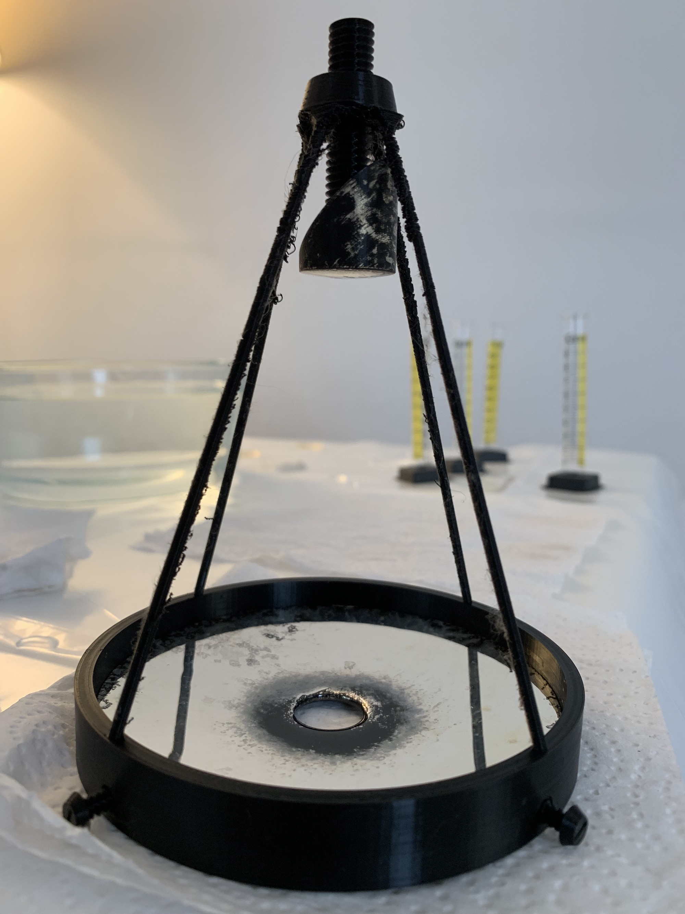
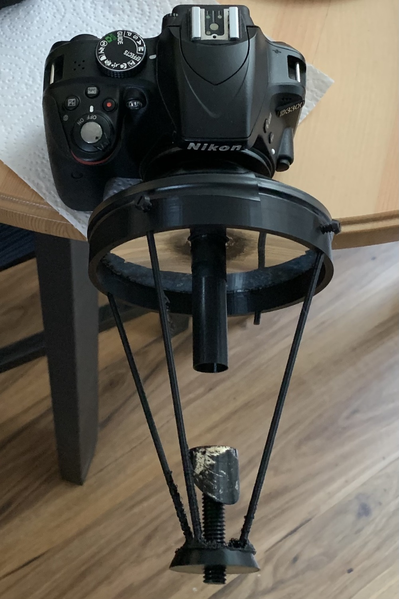
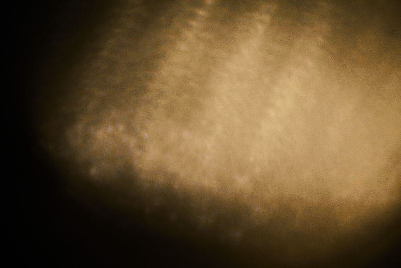
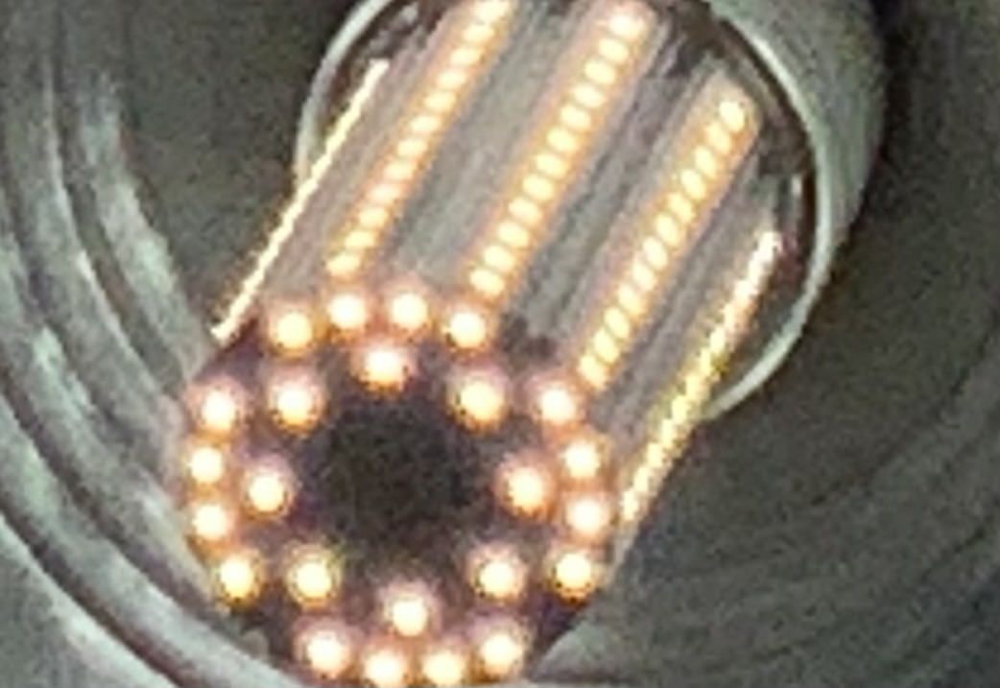

First Prototype of a Fully 3D-Printed Telescope With 3D-Printed Mirrors
Alex Bock 2022-07-17
Overview
I have a made a rough first prototype of a fully 3D-printed telescope with two 3D-printed curved mirrors and no external parts.
Design
This a compact Ritchey–Chrétien design with a concave hyperbolic primary (nearly parabolic) and a convex hyperbolic secondary. The system focal length is 1000 mm and the diameter of the primary mirror is 100 mm. The rear of the telescope has a M42 screw thread mount for connection to a camera and is intended for the flange distance of the Nikon F-mount with an M42 screw thread to F-mount bayonet adapter.
Mirror Construction
The mirrors were 3D-printed at 0.05 mm layer height with a 0.25 mm nozzle using PLA. To create a smooth surface, a thin level of epoxy resin was applied to the front surfaces and allowed to cure. The reflective coating is a thin layer of chemically applied silver. I tested classic procedures for Tollens' reagent immersion silvering used by astronomers before the adoption of aluminum vacuum deposition, but found the process to be very inconsistent. The mirrors in this prototype were silvered using a two-part "spray silver" forumulation of a similar chemical process ordered from Angel Gilding (no affiliation). The silver and reducer solutions were applied using two ordinary trigger spray bottles.
Imaging Test
The image quality from this first prototype is marginal and recognizable targets are just discernible. The silver coating on the micro-smooth epoxy surface is excellent, but the epoxy did not perfectly self-level before curing and the surface contains smooth waves and distortion.
Here is the image produced by the telescope and a reference photo directly from a standard camera of the same target (an LED corncob light bulb):
 Clearly I still have some work to do...
Future Directions
I am currently investigating chemical vapor smoothing of ABS/ASA with acetone and PVB with isopropyl alcohol as an alternative to epoxy coating, and hope to find a procedure to produce quality mirror surfaces for an open-source 3D-printed telescope.
Back to Index